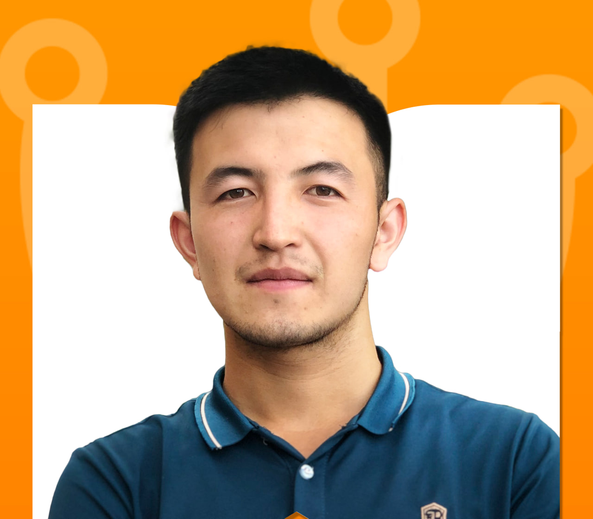

Ish nomi
Qisqa izoh: mijoz kim edi, qanday muammoni hal qildingiz va natija nima bo‘ldi.
Mavlon Mirzaxalilov · Dasturchi va front-end mentor
Biznes jarayonlarini avtomatlashtiruvchi tizimlar, jumladan CRM va LMS yechimlarini noldan loyihalashtirib, ishga tushiraman.
Loyihani boshlaymizYo‘nalishlarim

Qo‘lda, Excel va qog‘ozda yuritiladigan ish jarayonlarini yagona web tizimga ko‘chiraman. Ma’lumot bir joyda saqlanadi, hisobotlar avtomatik shakllanadi, takrorlanuvchi ishlar odam aralashuvisiz bajariladi.
Mijozlar bazasi, sotuv bosqichlari va buyurtmalarni boshqarish uchun biznesingizga moslashtirilgan CRM quraman. Har bir lid qayerda turgani ko‘rinib turadi, hech bir mijoz e’tibordan chetda qolmaydi.
O‘quv markazlari va kurslar uchun ta’lim platformasi: kurslar, guruhlar, dars jadvali, davomat va to‘lovlar bitta tizimda. O‘qituvchi, talaba va administrator uchun alohida qulay panellar.
Ishlarim
Qisqa izoh: mijoz kim edi, qanday muammoni hal qildingiz va natija nima bo‘ldi.
Qisqa izoh: mijoz kim edi, qanday muammoni hal qildingiz va natija nima bo‘ldi.
Qisqa izoh: mijoz kim edi, qanday muammoni hal qildingiz va natija nima bo‘ldi.
Loyihalarim
Savdo kompaniyasi uchun mijozlar va buyurtmalarni yurituvchi CRM. Sotuv voronkasi va menejerlar bo‘yicha hisobotlar.
Guruhlar, dars jadvali, davomat va to‘lovlarni yurituvchi LMS. Talaba va o‘qituvchi uchun alohida kabinet.
Kunlik hisobotlarni qo‘lda yig‘ish o‘rniga avtomatik shakllantiruvchi web panel va bildirishnomalar.
Mijozlar fikri
“Sharh matni: mijoz o‘z so‘zlari bilan 1–2 gap — nima qilib berdingiz va bu ularning ishiga qanday ta’sir qildi.”
“Sharh matni: mijoz o‘z so‘zlari bilan 1–2 gap — nima qilib berdingiz va bu ularning ishiga qanday ta’sir qildi.”
“Sharh matni: mijoz o‘z so‘zlari bilan 1–2 gap — nima qilib berdingiz va bu ularning ishiga qanday ta’sir qildi.”
Savol-javob
Muddat ish hajmiga bog‘liq: kichik avtomatlashtirish bilan to‘liq CRM yoki LMS orasidagi farq katta. Shuning uchun oldindan bitta raqam aytmayman — suhbatdan va talablarni yozib olganimdan keyin aniq muddatni bosqichlarga bo‘lib beraman.
Tayyor narxlar ro‘yxati yo‘q, chunki har bir tizim boshqacha. Avval vazifani va hajmni aniqlab olamiz, keyin men aniq summani va to‘lov bosqichlarini yozma ko‘rinishda beraman. Kelishilgan hajm va narx qayd etiladi.
Birinchi suhbatda hozirgi jarayoningizni va qiyinchiliklarni tinglayman. Keyin nima kerakligini yozib chiqaman va reja taklif qilaman. Kelishuvdan so‘ng ish bosqichlarga bo‘linadi — har bosqich oxirida natijani ko‘rasiz va fikringizni aytasiz.
Ha. Topshirgandan keyin ham aloqada bo‘laman: ishlash jarayonida chiqqan xatolarni tuzataman va savollaringizga javob beraman. Yangi imkoniyat qo‘shish kerak bo‘lsa, uni alohida kelishib olamiz.
Bog‘lanish
Savolingiz bormi — yozing, javob beraman.